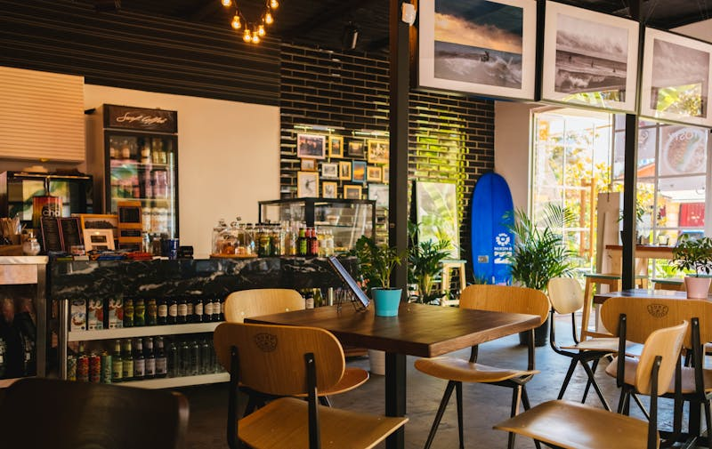
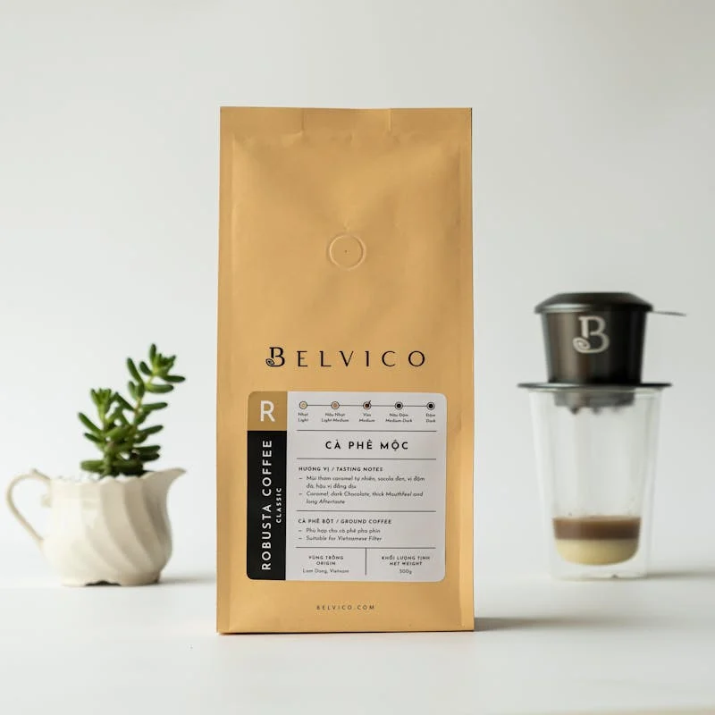
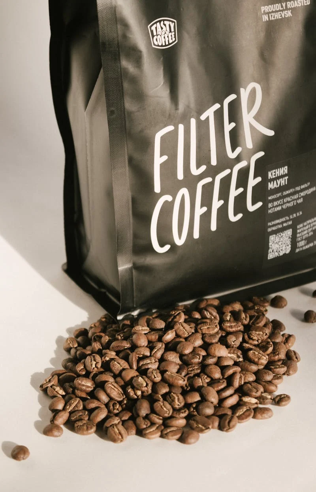
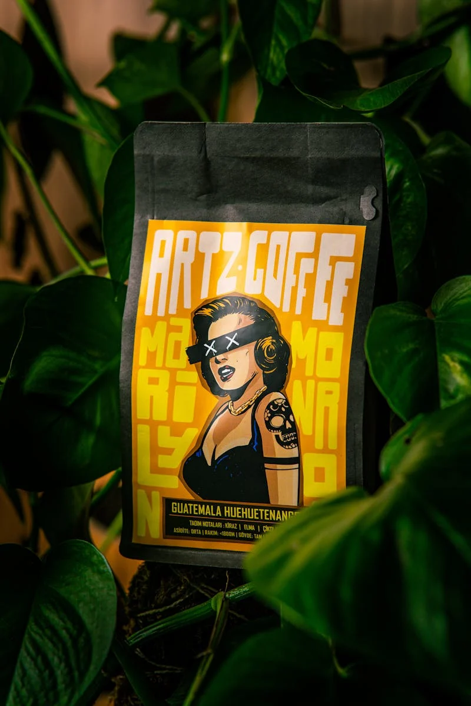
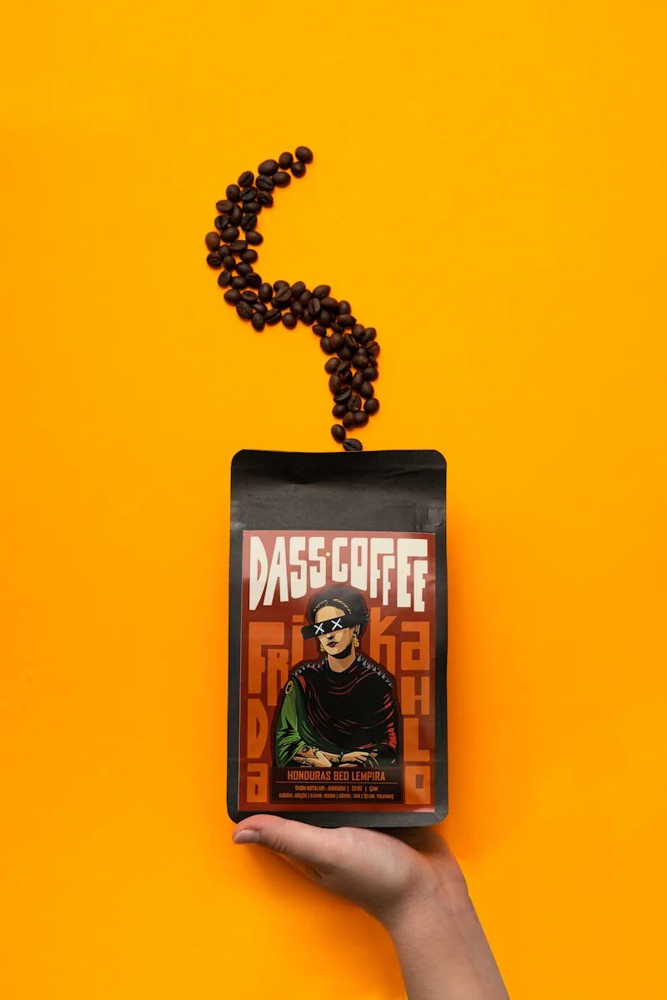

at sonny’s coffee, we believe every cup tells a story. our carefully sourced beans are roasted to perfection, delivering bold flavors and rich aromas that bring people together. whether you’re here to fuel your day or share moments with friends, our coffee is crafted to inspire connection and warmth in every sip.

roast at home

belvico: elevate your coffee experience with our meticulously sourced beans, expertly roasted to unlock rich, bold flavors. discover the perfect blend of tradition and innovation in every cup, inviting you to savor life’s moments

filter coffee: indulge in the simplicity of our carefully selected beans, crafted to deliver a smooth, rich taste in every sip. experience the perfect balance of flavor and freshness, inviting you to enjoy the art of coffee brewing.

artz coffee: immerse yourself in a world of flavor with our handpicked beans, roasted to perfection for a vibrant and aromatic experience. celebrate the artistry of coffee in every cup, where each sip is a masterpiece waiting to be enjoyed

dass coffee: experience the essence of boldness with our premium beans, expertly roasted to bring out deep, rich flavors. each cup invites you to savor the moment and enjoy the journey of exceptional coffee
Coffee is a language in itself.
— Jackie Chan
ever wanted to own your own coffee shop?
our monthly newsletter is packed with tips and tricks for anyone dreaming of owning their own coffee shop. you’ll find fun insights on brewing techniques, the latest industry trends, and stories from folks who’ve been there and done that. join us and get the scoop to help turn your coffee shop dreams into a reality